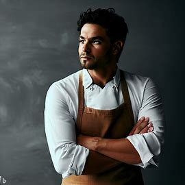
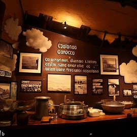

Próximo Evento: Cena de Degustación
Únete a nosotros el próximo 15 de octubre para una cena de degustación exclusiva con nuestros chefs destacados. ¡No te lo pierdas!
Fecha: 15 de octubre de 2023

Evento de Cata de Vinos
Explora una variedad de vinos seleccionados y aprende sobre maridajes de vinos y platos en nuestro próximo evento de cata.
Fecha: 25 de octubre de 2023

Evento de Cocina en Vivo
Únete a nosotros para una emocionante demostración de cocina en vivo con nuestro chef principal, Ana Rodríguez. Aprende algunos trucos culinarios y degusta platos exquisitos.
Fecha: 5 de noviembre de 2023
Acerca de Nuestro Chef
Conoce a nuestro talentoso chef ejecutivo, Juan Pérez. Con años de experiencia en la cocina internacional, te sorprenderá con sus creaciones únicas.
Desde temprana edad, Juan descubrió su amor por la cocina mientras ayudaba a su abuela a preparar comidas tradicionales en su pequeña cocina familiar. Aquellos momentos de aprendizaje compartido dejaron una marca indeleble en su corazón y lo inspiraron a buscar una carrera en el mundo de la cocina. Después de completar su formación culinaria en una renombrada escuela de cocina en París, Juan viajó por todo el mundo, explorando y absorbiendo la riqueza de las cocinas globales. Su viaje lo llevó a trabajar en restaurantes con estrellas Michelin en Europa y Asia, donde perfeccionó sus habilidades y adquirió un conocimiento profundo de los ingredientes locales y las técnicas culinarias de clase mundial. Juan Pérez es conocido por su enfoque creativo en la cocina, fusionando sabores tradicionales con un toque contemporáneo. Sus platos únicos son un testimonio de su habilidad para sorprender y deleitar a los comensales, llevándolos en un viaje culinario inolvidable. En Cocinando en la Nube, el chef Juan Pérez se enorgullece de ofrecer a nuestros clientes una experiencia gastronómica excepcional. Su compromiso con la excelencia y su amor por los ingredientes frescos y de calidad son evidentes en cada plato que crea. Únete a nosotros para disfrutar de las delicias culinarias del chef Juan Pérez y experimenta la pasión y el arte que él trae a cada comida. Estamos seguros de que su creatividad y experiencia te sorprenderán y te dejarán con ganas de volver por más. ¡Esperamos verte pronto en Cocinando en la Nube!
Historia de Cocinando en la Nube
Descubre la historia de nuestro restaurante y cómo hemos evolucionado para ofrecer experiencias culinarias excepcionales.
Título: "El Sueño Culinario en las Alturas"
En un pequeño pueblo enclavado en las montañas de Manabí, Ecuador, una joven apasionada por la cocina llamada Martina tenía un sueño audaz y delicioso. Martina había crecido rodeada de sabores auténticos y tradicionales, gracias a la cocina de su abuela. Siendo una niña curiosa, pasaba horas observando cómo su abuela mezclaba ingredientes frescos y secretos transmitidos de generación en generación para crear platos que llenaban el aire con aromas mágicos. A medida que Martina crecía, su amor por la cocina solo se intensificaba. Comenzó a experimentar con nuevas recetas y a fusionar los sabores de la región con técnicas culinarias modernas. Aunque el pueblo era hermoso, Martina soñaba en grande y sentía que su cocina debía llegar a lugares más allá de las montañas. Un día, mientras navegaba por internet, Martina descubrió una oportunidad que cambiaría su vida para siempre: un concurso de cocina a nivel nacional. El premio era una beca para estudiar gastronomía en una prestigiosa escuela culinaria en la ciudad de Quito. Sin pensarlo dos veces, Martina se inscribió. Con cada platillo que creaba para el concurso, Martina recordaba los aromas y sabores de su infancia. Cada bocado era una historia de amor hacia su cultura y su familia. Finalmente, llegó el día del concurso y Martina presentó su plato estrella: "Sabor de las Montañas". El jurado quedó impresionado por la combinación de ingredientes frescos y técnicas culinarias innovadoras. Martina ganó el concurso y su sueño se hizo realidad. Se mudó a Quito, donde se sumergió en el mundo de la gastronomía. Pero no olvidó sus raíces y siempre llevó consigo los secretos culinarios de su abuela. Después de años de duro trabajo y aprendizaje, decidió regresar a su pueblo natal. Con la determinación y el talento de Martina, abrió "Cocinando en la Nube", un restaurante que se convirtió en un destino gastronómico reconocido en todo Ecuador. El nombre reflejaba la idea de que la cocina podía elevarse a las alturas y llevar a las personas a un viaje culinario celestial. En "Cocinando en la Nube", Martina no solo ofrecía platos exquisitos, sino que también promovía la cultura local y apoyaba a los agricultores de la región. El restaurante se convirtió en un símbolo de la pasión de Martina por la cocina y su compromiso con su comunidad. Y así, la historia de "Cocinando en la Nube" se convirtió en una leyenda en las montañas de Manabí, un recordatorio de que los sueños pueden elevarse a nuevas alturas cuando se mezclan con amor, tradición y dedicación.